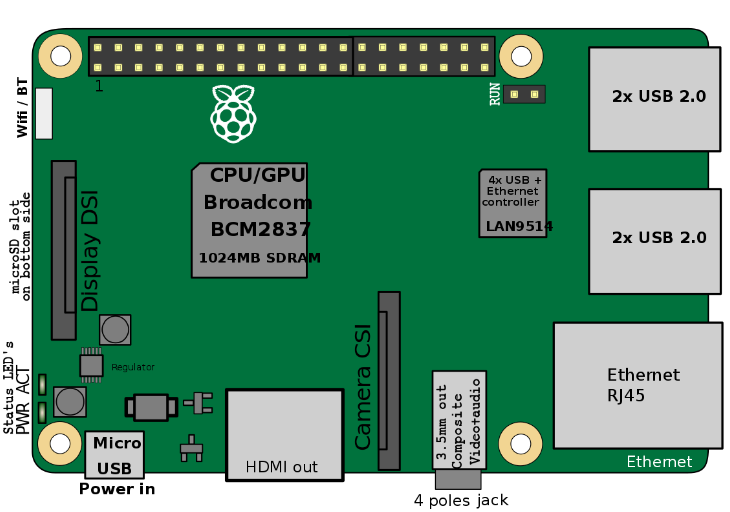

This is a draft document that was built and uploaded automatically. It may document beta software and be incomplete or even incorrect. Use this document at your own risk.
Abstract
This guide contains an overview of SUSE Linux Enterprise Server for ARM on the Raspberry Pi platform and will guide you through the setup procedure.
Disclaimer: Documents published as part of the SUSE Best Practices series have been contributed voluntarily by SUSE employees and third parties. They are meant to serve as examples of how particular actions can be performed. They have been compiled with utmost attention to detail. However, this does not guarantee complete accuracy. SUSE cannot verify that actions described in these documents do what is claimed or whether actions described have unintended consequences. SUSE LLC, its affiliates, the authors, and the translators may not be held liable for possible errors or the consequences thereof.
Table of Contents
To be able to use SUSE Linux Enterprise Server for ARM on the Raspberry Pi, an Arm compatible Raspberry Pi* is required. SUSE Linux Enterprise Server 12 SP3 for ARM is tested to work on a Raspberry Pi 3 Model B board.
The Raspberry Pi is a series of small single-board computers based on a System on a Chip (SoC) by Broadcom*, featuring various peripherals on the board.
Figure 1. Overview of the Raspberry Pi 3 Model B Connectors, © Efa / English Wikipedia / CC BY-SA 3.0
|  |
Selected Features of the Raspberry Pi 3 Model B
The Broadcom BCM2837 SoC includes a quad-core Arm* Cortex*-A53 Application Processor supporting the ARMv8 32-bit and 64-bit instruction sets. With the default configuration, it is clocked up to 1.2 GHz.
1024 MiB DDR2 memory mounted on the back of the board.
Broadcom* VideoCore* IV providing OpenGL* ES 2.0 support. Displays can be connected over HDMI or composite (TRRS jack).
A USB Ethernet adapter on the board provides 10/100 MBit/s Ethernet.
The BCM43438 chip supports IEEE-802.11b, IEEE-802.11g and IEEE-802.11n in the 2.4 GHz band. It also provides Bluetooth 2.0-4.1 (Low Energy).
The microSDHC card slot allows for a memory card to be inserted as primary boot medium.
The Raspberry Pi's main power source is the Micro USB connector. If your Raspberry Pi comes with a power supply, it is recommended to use the bundled power supply only.
A total of four USB 2.0 ports is available.
A 0.1 inch multi-function pin header is also available. Note that not all functionality of this header is exposed in SUSE Linux Enterprise Server for ARM on the Raspberry Pi.
SUSE Linux Enterprise Server for ARM 12 SP3 is the first fully supported commercial Linux operating system release available for the Raspberry Pi. You can purchase subscriptions which entitle you to receive all released bug and security fixes, feature updates, and technical assistance from SUSE's worldwide support. Learn more about subscription and support options at https://www.suse.com/support/programs/subscriptions/?id=SUSE_Linux_Enterprise_Server
If you want to try out SUSE Linux Enterprise Server for ARM 12 SP3 on the Raspberry Pi, SUSE will provide you with a trial version. This gives you access to free patches and updates for a period of 60 days. You must sign in to the SUSE Customer Center at https://scc.suse.com/login using your Customer Center account credentials to receive this free offer. If you do not have a Customer Center account, you must create one to take advantage of the trial version.
Raspberry Pi 3 Model B
SD Card with at least 8GB capacity
USB keyboard, mouse
HDMI cable and monitor
Power supply with at least 2.5A capacity
The previous release of “SUSE Linux Enterprise Server for the Raspberry Pi” (based on SUSE Linux Enterprise Server 12 SP2) was intended for experimental users of SUSE Linux Enterprise Server on the Raspberry Pi platform. It included several large packages such as the C compiler and development tools. The commercial release of the Raspberry Pi image of SUSE Linux Enterprise Server for ARM is different in several ways:
It is based on the later code base from SUSE Linux Enterprise Server 12 SP3.
It uses the normal SUSE Linux Enterprise Server for ARM support channels instead of a special purpose “SUSE Linux Enterprise Server for the Raspberry Pi” channel.
The image is significantly smaller than the previous release to allow the installation to be tailored for the actual use.
Additional packages can be installed by YaST or Zypper after registration. Since many of our customers are interested in using SUSE Linux Enterprise Server for ARM on a Raspberry Pi for industrial monitoring and digital signage, it makes more sense to provide a minimal image that can easily be expanded.
Raspbian is the de-facto default distribution for the Raspberry Pi. The following paragraphs provide a short overview of differences between SUSE Linux Enterprise Server for ARM on the Raspberry Pi and Raspbian.
Raspbian uses a kernel with modifications especially for the Raspberry Pi. SUSE Linux Enterprise Server for ARM uses the default SUSE Linux Enterprise kernel for AArch64 which is derived from the official mainline kernel.
SUSE Linux Enterprise Server for ARM on the Raspberry Pi is the first distribution for the Raspberry Pi using the AArch64 instruction set.
In Raspbian, the kernel is loaded directly. This is not supported by SUSE Linux Enterprise Server for ARM, where the U-Boot boot loader is used to provide an EFI boot environment. A GRUB2 EFI binary is chainloaded to provide a graphical boot screen.
SUSE Linux Enterprise Server for ARM on the Raspberry Pi uses Btrfs as file system for the root partition. Compression is enabled by default for better SD card performance.
YaST is the installation and configuration framework
for SUSE Linux Enterprise. It is popular for its easy use, flexible graphical
interfaces and the capability to customize your system quickly
during and after the installation. YaST can be used to
configure your entire system: You can configure hardware, set up
networking, manage system services and tune your security
settings. All these tasks can be reached from the YaST
control center. To start it, choose YaST in the menu or run
the command xdg-su -c yast2. You will be
prompted to enter the password of the root user.
When started, YaST shows an overview of available modules (Figure 3, “The YaST Control Center”). Simply click an icon to open a module.
Zypper is the package manager for SUSE Linux Enterprise. It is the tool for installing, updating and removing packages and for managing repositories.
The general syntax for Zypper invocations is:
zypper[global-options]command[command-options][arguments]...
For most commands, there is both a short and a long form. An overview is available with zypper --help.
zypper install mplayer
zypper remove mplayer
zypper list-patches
zypper patch
The recommended way to install available software updates is using the YaST Online Updater. To start it, choose “Online Update” in “Settings” under “Desktop Apps” in the IceWM menu.
X.Org hardware acceleration is disabled to improve system stability and reliability.
To enable it, comment out the following line in
/etc/X11/xorg.conf.d/20-kms.conf:
Option "AccelMethod" "none" by
prefixing it with “#”.
For other limitations refer to the online version of the Release Notes at https://www.suse.com/releasenotes/x86_64/SUSE-SLES/12-SP3/.